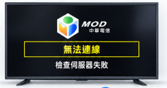
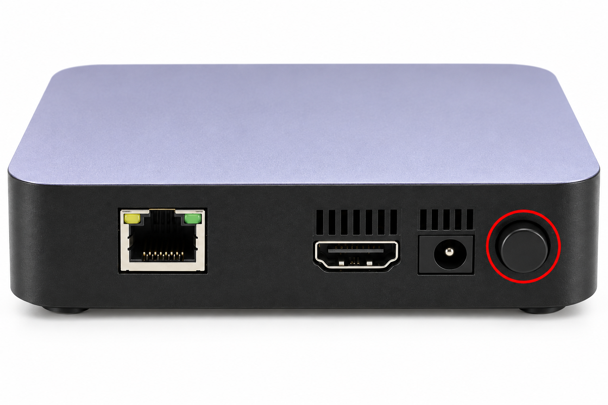
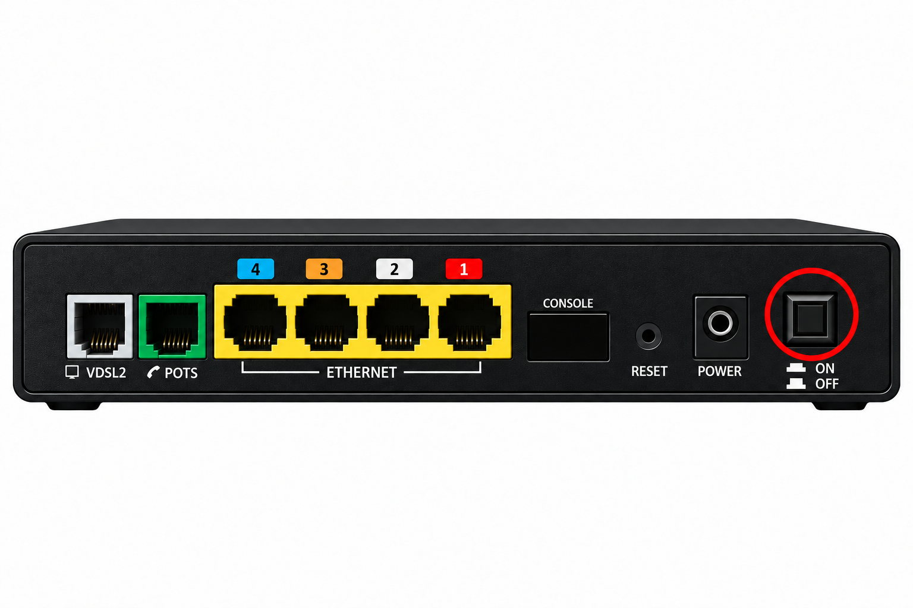
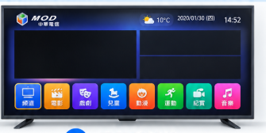

畫面狀況
電視顯示 MOD 無法連線、檢查伺服器失敗。
排除方式：重開 MOD ＋ 重開數據機
重開 MOD
將 MOD 電源關閉，再重新開啟。

MOD 主機｜紅圈為電源開關 重開數據機
將數據機電源關閉，再重新開啟。

數據機｜紅圈為電源開關
故障排除｜依電視畫面選擇處理方式

電視顯示 MOD 無法連線、檢查伺服器失敗。
排除方式：重開 MOD ＋ 重開數據機
將 MOD 電源關閉，再重新開啟。

將數據機電源關閉，再重新開啟。


已進入 MOD 首頁，但頻道無法觀看。
排除方式：重開數據機
將數據機電源關閉，再重新開啟。
設備圖片為示意圖，請對照現場設備的電源開關。